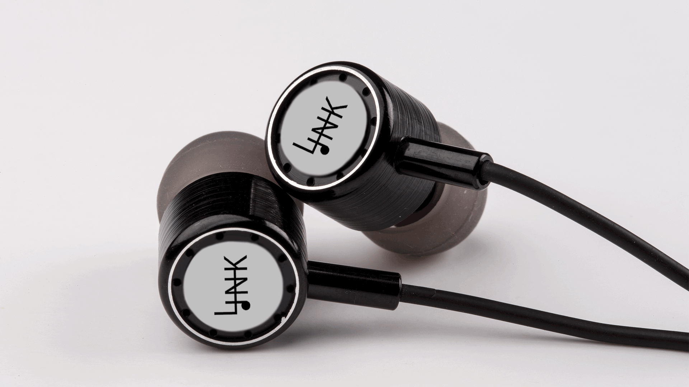
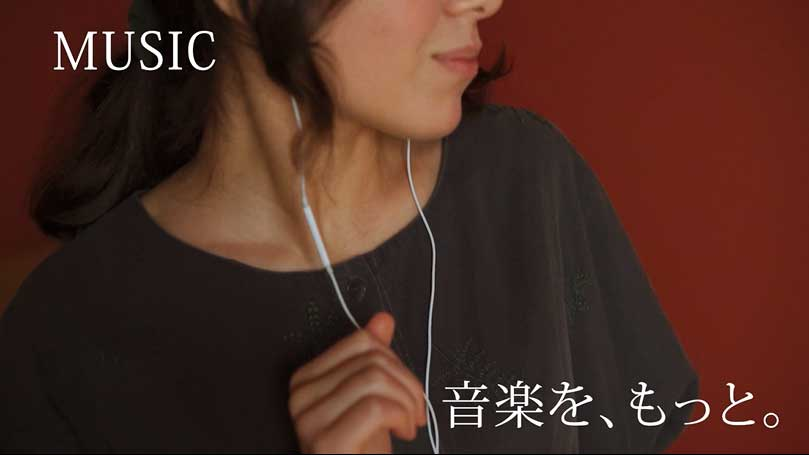

TRACK 02 / PRODUCT MOVIE
LINK ONE
音は、これからも。

WATCH THE MOVIE
♪ 再生ボタンを押すと音が出ます
PROJECT INFORMATION
- CATEGORY
- Product CM
- ROLE
- 企画・映像制作
- TOOLS
- After Effects / Premiere Pro / Illustrator / Photoshop
CONCEPT
有線イヤホン「LINK ONE」の架空製品CM。 音楽が過去から未来へと生活に寄り添う姿を 映像で表現した作品。
CREATIVE DIRECTION
「音は、これからも。」というメッセージを軸に、 製品の魅力と、日常の中で音を楽しむ体験の両方が 伝わる映像を目指した。
機能を文字で説明するだけでなく、 ケーブルの動きやモードごとの画面表現を通して、 見る人が違いを直感的に理解できる構成とした。
CREATIVE POINT 01 / MOTION DESIGN
選べる楽しさを、動きで表現。
ケーブルの長さを切り替える演出では、 After EffectsのTrim Pathsを使用。 形状が変化する動きを通して、 製品の選択肢を直観的に伝えられるよう 工夫した。

CREATIVE POINT 02 / SOUND MODES
音楽の楽しみ方を、直観的に。
MUSIC・MOVIE・GAME・TALKの 4つのSOUNDモードを視覚化。 用途の違いを直観的に理解できるよう、 画面の拡大と切り替えを組み合わせた。
下のボタンで、4つのモード演出を切り替えられます。
SELECTED MODE: MUSIC